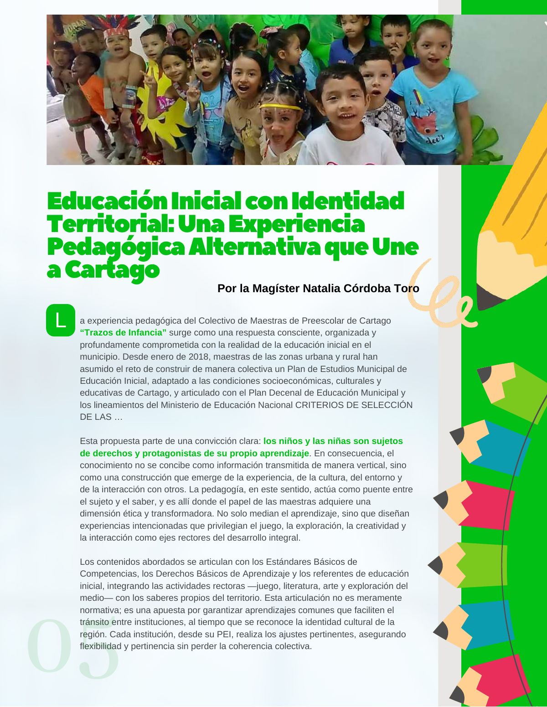
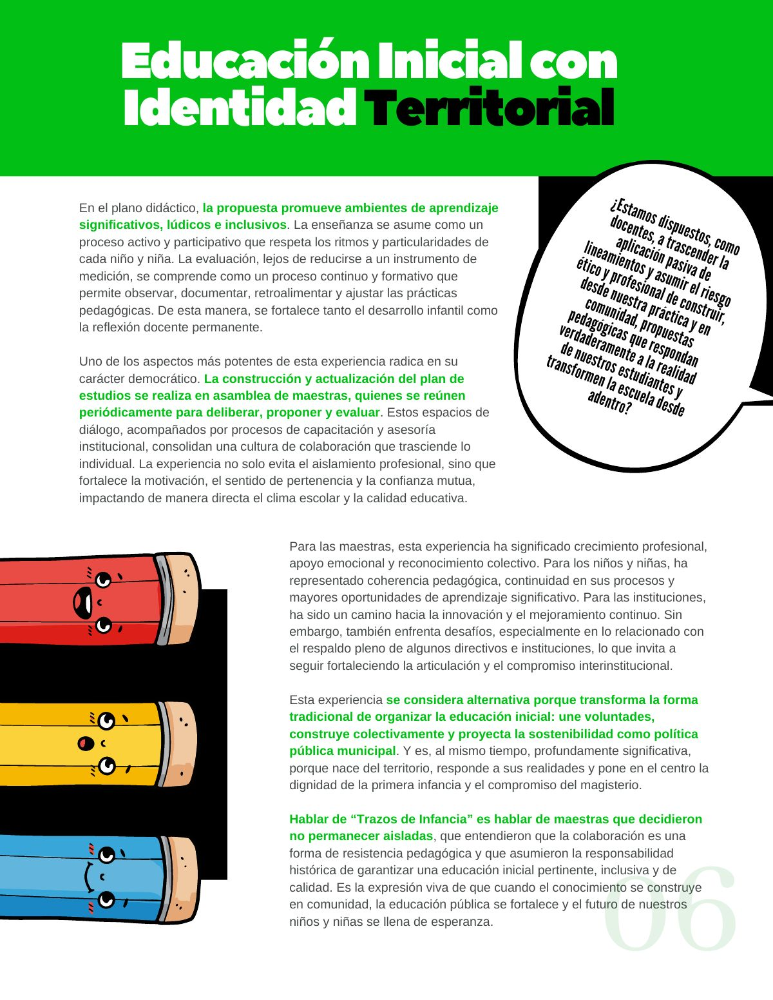

Educación inicial con identidad territorial: una experiencia pedagógica alternativa que une a Cartago
Cómo maestras de preescolar unieron esfuerzos para transformar la educación inicial desde la identidad territorial y la construcción colectiva.
PDF · 2 págs. · 2,6 MBLa experiencia pedagógica del Colectivo de Maestras de Preescolar de Cartago “Trazos de Infancia” surge como una respuesta consciente, organizada y profundamente comprometida con la realidad de la educación inicial en el municipio. Desde enero de 2018, maestras de las zonas urbana y rural han asumido el reto de construir de manera colectiva un Plan de Estudios Municipal de Educación Inicial, adaptado a las condiciones socioeconómicas, culturales y educativas de Cartago, y articulado con el Plan Decenal de Educación Municipal y los lineamientos del Ministerio de Educación Nacional.
Esta propuesta parte de una convicción clara: los niños y las niñas son sujetos de derechos y protagonistas de su propio aprendizaje. En consecuencia, el conocimiento no se concibe como información transmitida de manera vertical, sino como una construcción que emerge de la experiencia, de la cultura, del entorno y de la interacción con otros. La pedagogía, en este sentido, actúa como puente entre el sujeto y el saber, y es allí donde el papel de las maestras adquiere una dimensión ética y transformadora. No solo median el aprendizaje, sino que diseñan experiencias intencionadas que privilegian el juego, la exploración, la creatividad y la interacción como ejes rectores del desarrollo integral.
Los contenidos abordados se articulan con los Estándares Básicos de Competencias, los Derechos Básicos de Aprendizaje y los referentes de educación inicial, integrando las actividades rectoras —juego, literatura, arte y exploración del medio— con los saberes propios del territorio. Esta articulación no es meramente normativa; es una apuesta por garantizar aprendizajes comunes que faciliten el tránsito entre instituciones, al tiempo que se reconoce la identidad cultural de la región. Cada institución, desde su PEI, realiza los ajustes pertinentes, asegurando flexibilidad y pertinencia sin perder la coherencia colectiva.
En el plano didáctico, la propuesta promueve ambientes de aprendizaje significativos, lúdicos e inclusivos. La enseñanza se asume como un proceso activo y participativo que respeta los ritmos y particularidades de cada niño y niña. La evaluación, lejos de reducirse a un instrumento de medición, se comprende como un proceso continuo y formativo que permite observar, documentar, retroalimentar y ajustar las prácticas pedagógicas. De esta manera, se fortalece tanto el desarrollo infantil como la reflexión docente permanente.
Uno de los aspectos más potentes de esta experiencia radica en su carácter democrático. La construcción y actualización del plan de estudios se realiza en asamblea de maestras, quienes se reúnen periódicamente para deliberar, proponer y evaluar. Estos espacios de diálogo, acompañados por procesos de capacitación y asesoría institucional, consolidan una cultura de colaboración que trasciende lo individual. La experiencia no solo evita el aislamiento profesional, sino que fortalece la motivación, el sentido de pertenencia y la confianza mutua, impactando de manera directa el clima escolar y la calidad educativa.
¿Estamos dispuestos, como docentes, a trascender la aplicación pasiva de lineamientos y asumir el riesgo ético y profesional de construir, desde nuestra práctica y en comunidad, propuestas pedagógicas que respondan verdaderamente a la realidad de nuestros estudiantes y transformen la escuela desde adentro?
Para las maestras, esta experiencia ha significado crecimiento profesional, apoyo emocional y reconocimiento colectivo. Para los niños y niñas, ha representado coherencia pedagógica, continuidad en sus procesos y mayores oportunidades de aprendizaje significativo. Para las instituciones, ha sido un camino hacia la innovación y el mejoramiento continuo. Sin embargo, también enfrenta desafíos, especialmente en lo relacionado con el respaldo pleno de algunos directivos e instituciones, lo que invita a seguir fortaleciendo la articulación y el compromiso interinstitucional.
Esta experiencia se considera alternativa porque transforma la forma tradicional de organizar la educación inicial: une voluntades, construye colectivamente y proyecta la sostenibilidad como política pública municipal. Y es, al mismo tiempo, profundamente significativa, porque nace del territorio, responde a sus realidades y pone en el centro la dignidad de la primera infancia y el compromiso del magisterio.
Hablar de “Trazos de Infancia” es hablar de maestras que decidieron no permanecer aisladas, que entendieron que la colaboración es una forma de resistencia pedagógica y que asumieron la responsabilidad histórica de garantizar una educación inicial pertinente, inclusiva y de calidad. Es la expresión viva de que cuando el conocimiento se construye en comunidad, la educación pública se fortalece y el futuro de nuestros niños y niñas se llena de esperanza.
Así se ve en la revista
2 páginas
